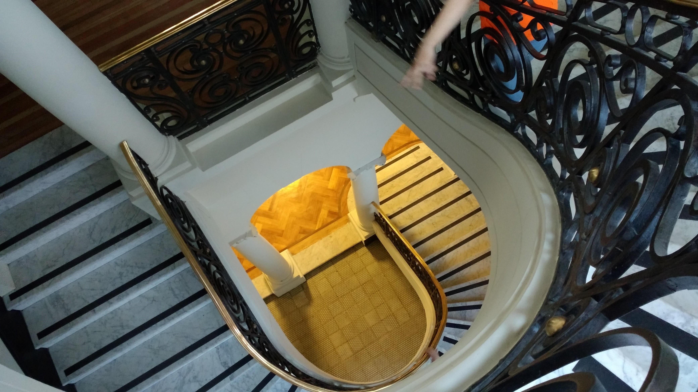
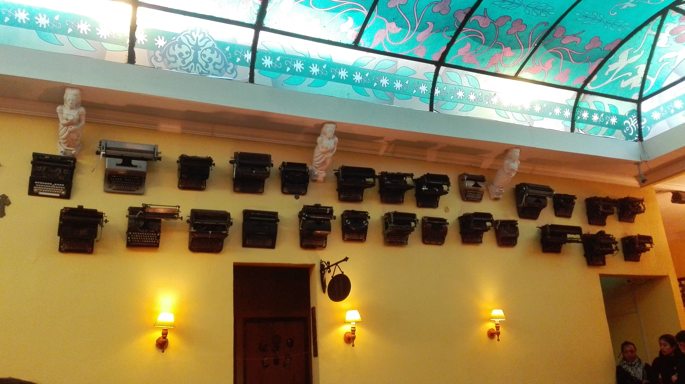
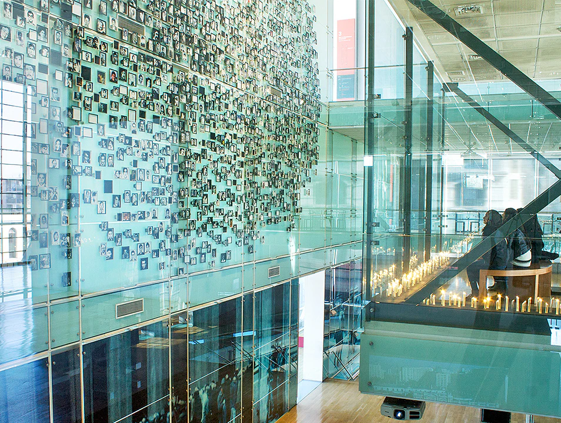

¿Que es el Barrio Yungay?
Hasta 1835, el Barrio Yungay fue una propiedad rural de José Santiago Portales Larraín, padre del ministro Diego Portales y, conocido por ello, como "el llanito de Portales". A la muerte del patriarca, las 350 hectáreas fueron repartidas entre sus hijos, quienes a su vez las vendieron a distintas empresas loteadoras. La hijuela del ministro Portales fue una de las primeras en subdividirse, dejándose espacio en ella para la futura Plaza Yungay y la parroquia San Saturnino. El Estado compró la parte más occidental del "llanito" para crear la Quinta Normal de Agricultura. Paralelamente la actividad comercial del camino a Valparaíso -hoy San Pablo- impulsó la atracción de habitantes al área de Mapocho, lo que consolidó al sector como la primera expansión hacia la periferia que tuvo Santiago. Al concluir la guerra contra la confederación Perú-boliviana, el Presidente Joaquín Prieto decidió celebrar el triunfo firmando un decreto que dio al barrio el nombre de la batalla de la victoria: Yungay. Ese mismo año José Zapiola creó el Himno a la Victoria de Yungay, convirtiéndose en un nuevo elemento de identidad para el barrio.
En la década de 1840, la instauración del barrio se vio reflejada en las páginas de algunos periódicos nacionales como El semanario de Santiago y El Mercurio de Valparaíso y se consolidó con la llegada de algunos intelectuales que se asentaron en su territorio, como el profesor y exiliado político argentino Domingo Faustino Sarmiento, el geólogo francés Amado Pissis y el sabio polaco Ignacio Domeyko, quienes otorgaron al barrio Yungay una fisonomía ligada a la residencia de incipientes grupos medios y vinculados al trabajo en el aparato público. En esta misma época se fundaron diversas instituciones en la zona como la Casa de Orates, la Hospedería San Rafael y la Escuela Nacional de Preceptores. El fuerte crecimiento demográfico del sector llevó al Arzobispado de Santiago a erigir la Parroquia de San Saturnino en 1844, construida por segunda vez en 1887, en estilo gótico. A su vez, en 1861 se finalizó la construcción de la iglesia y claustro de Los Capuchinos, en las calles Cumming con Catedral. Pero sin duda, el hecho más relevante, ocurrió en 1888 cuando se inauguró el principal símbolo urbano de Yungay: el monumento al roto chileno del escultor Virginio Arias, que selló al barrio como el sector del "roto" y de la chilenidad dentro de la ciudad.
Durante el siglo veinte, el Barrio Yungay fue retratado por la literatura a través de obras como Juana Lucero (1902) del novelista Augusto D'Halmar y durante los años cuarenta por La sangre y la esperanza (1943) de Nicomedes Guzmán, quien ambientó su novela en la parte más norte de Yungay, mostrando el mundo marginal de los proletarios ferroviarios cercanos a calles Mapocho y San Pablo. En la década del veinte, se construyeron, en la parte más sur del barrio -calle Huérfanos-, hermosos y elegantes cités como el Lucrecia Valdés de Barros y el Adriana Cousiño, además del Teatro Novedades, en Cueto. Hacia 1950 el barrio Yungay constituía un mundo aparte en la vida urbana de masas. Su fisonomía provinciana y los lazos comunitarios eran extraños en una ciudad como Santiago y, mientras en otros barrios desapareció el carnaval, en Yungay se celebra hasta hoy, cada 20 de enero. El terremoto de 1985 afectó las construcciones del sector, especialmente aquellas edificadas en el siglo XIX. Pese a esto, el surgimiento de organizaciones vecinales como el Comité de Adelanto del Barrio Yungay, al igual que la renovación de establecimientos señeros como la "Peluquería Francesa", han impulsado nuevamente los históricos lazos comunitarios de uno de los barrios más llamativos de la capital.
Destacados

El Palacio Álamos construido entre los años 1921 y 1925 por encargo del matrimonio Álamos Igualt
quienes junto a su familia lo habitaron hasta el año 1946. Diseñado por los arquitectos Alberto Álamos
y Humberto Bravo.
Palacio Alamos

Plaza Yungay

El origen de Fuente Mardoqueo parte como una idea familiar. La familia Peñafiel liderados por Don
Gustavo emprendieron en el rubro gastronómico con una idea clara: crear y vender el mejor sándwich de
Chile.
Fuente Mardoqueo

Es un espacio destinado a dar visibilidad a las violaciones a los derechos humanos cometidas por el
Estado de Chile entre 1973 y 1990; a dignificar a las víctimas y a sus familias, para que estos hechos nunca más se
repitan.